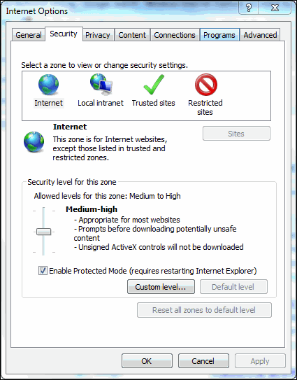
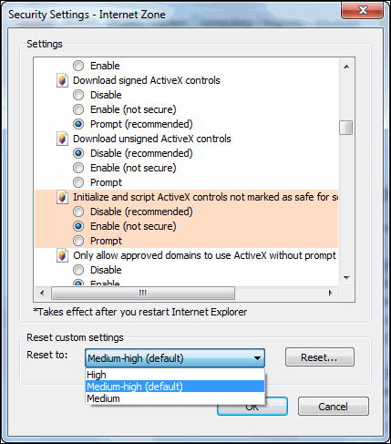
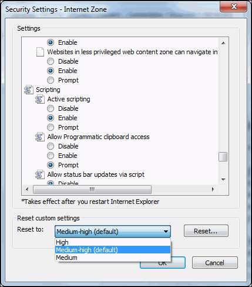

| • | Web.Link code only functions in web pages loaded into the Creo Parametric embedded browser. Pages containing Web.Link code will not work if the user browses to them using external web browsers. |
| • | Web.Link is disabled by default using a Creo Parametric configuration option. |
| • | The Web.Link ActiveX control has been created as not safe for scripting. This requires that security settings be enabled in Internet Explorer, allowing only certain sites access to the Web.Link methods and objects. |
| 1. | In Internet Explorer, select Tools Internet Options. Click the Security tab as shown in the following figure. 
|
| 2. | Select a zone for which you want to change security settings. |
| 3. | Click Custom Level…. |
| 4. | Change the setting for Initialize and Script ActiveX controls not marked as safe under ActiveX controls and plugins to Enable, as shown in the following figure. 
|
| 5. | Change the setting for Active Scripting under Scripting to Enable as shown in the following figure. 
|
| 1. | In Internet Explorer, select Tools Internet Options. |
| 2. | Click the Security tab. |
| 3. | Select the security zone to which you want to add sites. |
| 4. | Click Sites…. |
| 5. | Click Advanced…, this option is available only for the local intranet. |
| 6. | Enter the name of site. |
| 7. | Click Add. |
| • | Allow scripting of ActiveX controls not marked as safe |
| • | Allow active scripting |
| • | Disable—The activity is not permitted. Attempting to load a Web.Link page will result in the following exception:"Automation server can’t create object" |
| • | Prompt—Each time the browser loads a web page that tries to access Web.Link methods and objects, you are prompted to allow the interaction activity as shown in the following figure. |
| • | Enable—The interaction activity is always permitted |
| • | Intranet—The organization’s local intranet, including all access via file:// URLs and selected internal web servers. |
| • | Trusted sites—Web sites designated as trusted. |
| • | Restricted sites—Web sites designated as untrusted. |
| • | Internet—All other sites accessed via the Internet. |
C:\winnt\system32\regsvr32 /u [/s] <creo_loadpoint>\Common Files\<datecode>\<machine type>\obj\pfcscom.dll| • | Edit your config.pro file to enable Web.Link on the local machine. |
| • | Optionally setup browser security for your local intranet settings. |
| • | Run Creo Parametric. |
|
Error
|
Explanation
|
|---|---|
|
pfcXNotConnectedToProE exception
|
The web page was loaded into a web browser that is not the Creo Parametric embedded web browser.
OR
The web page was loaded into the embedded web browser but the configuration option web_enable_javascript is not on.
|
|
Nothing happens when JavaScript is invoked; or "Automation server can't create object.”
|
The Internet Explorer or Mozilla security is not configured to allow the web page to run Web.Link, or the Web.Link license is not configured.
|